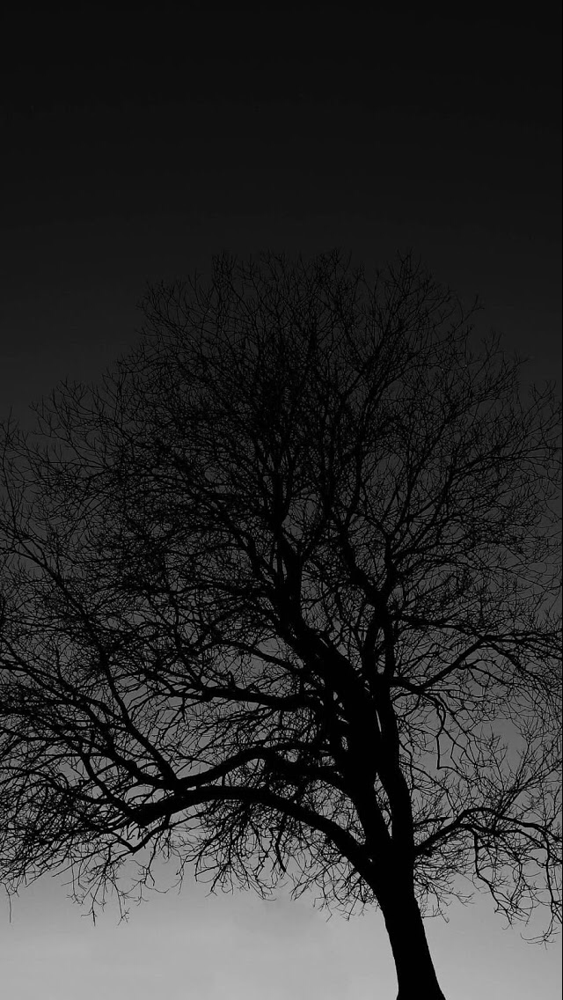

Merahaba ben İstanbul Medeniyet Üniverseitesi Bilgisayar Mühendisliği 3. sınıf öğrencisiyim. Malatyada doğdum büyüdüm 19 yaşında İstanbula taşındım. Boş zamanlarımda sevdiğim insanlarla veya tek başıma dışarı çıkıp zaman geçirmekten cok zevk alırılm
Ağaçlar bana hep birşeyleri başarabilmek için sabırla çalışmak gerektiğini hatırlatıyor.